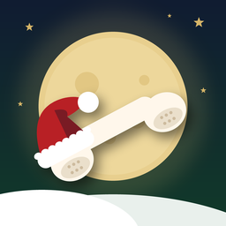

Allô Père NoëlSanta Calls (Allô Père Noël) has no account, no ads, no tracking and no analytics. The app collects no data: nothing leaves your iPhone.
First names, age, qualities, the special moment and the Christmas wish are only used to build Santa's call. They are saved on your iPhone and never sent anywhere. You can erase them at any time in the app's settings, or by deleting the app.
Santa pauses so your child can answer, but the app doesn't listen: it doesn't use the microphone and records no sound. In English and French, Santa's voice is recorded in the app; in the other languages, and for the words you typed, it is made by the iPhone itself. Everything works without the internet.
Before the call, you can turn on “Show your child in a corner, like a video call”. The front camera is then shown live on the iPhone during the call: the picture is neither recorded nor sent. With the Christmas Pass, you can also turn on “Keep their reaction in photos”: a few photos are taken during the call and kept in memory, then shown to you at the end. They are saved to Photos or shared only if you ask; otherwise they are erased. Nothing leaves the device. Without this option, the camera is never used.
The card is made on your iPhone. The first name only appears if you turn it on. It's only shared if you choose to, with the iOS share sheet. Photo access is only requested if you choose to save it to your photos.
The full magic is a one-time App Store purchase, protected by a question for grown-ups. Apple handles the payment: we receive no payment details.
The app is used by parents, with their children. It has no ads, no outside links during the call and no open chat.